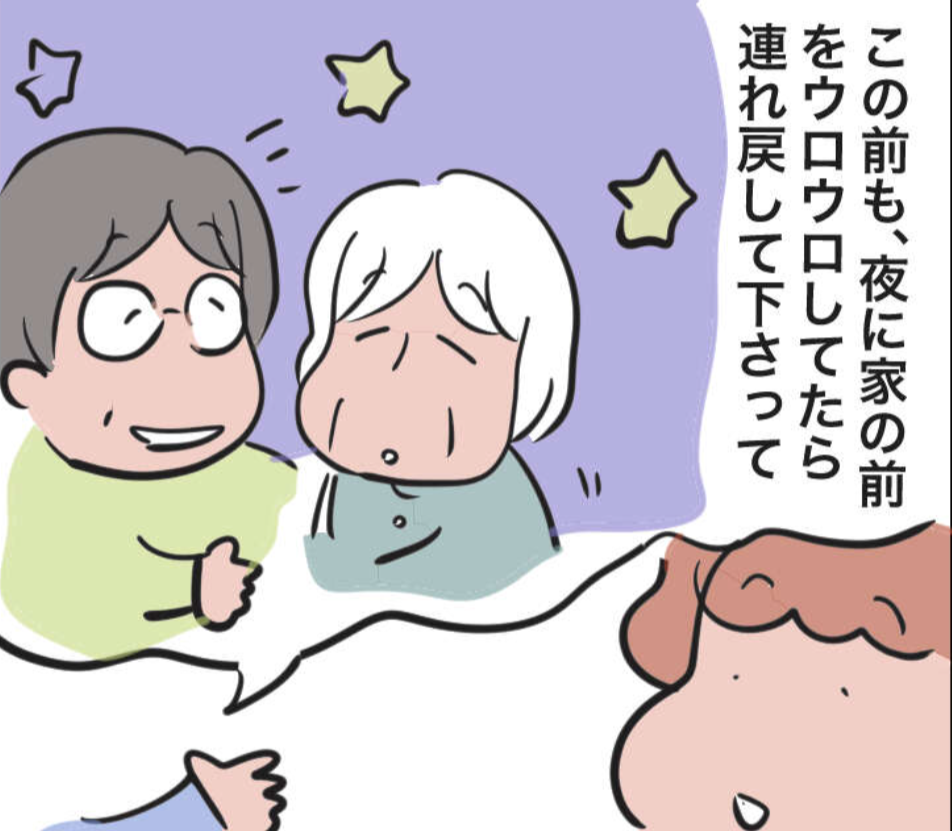
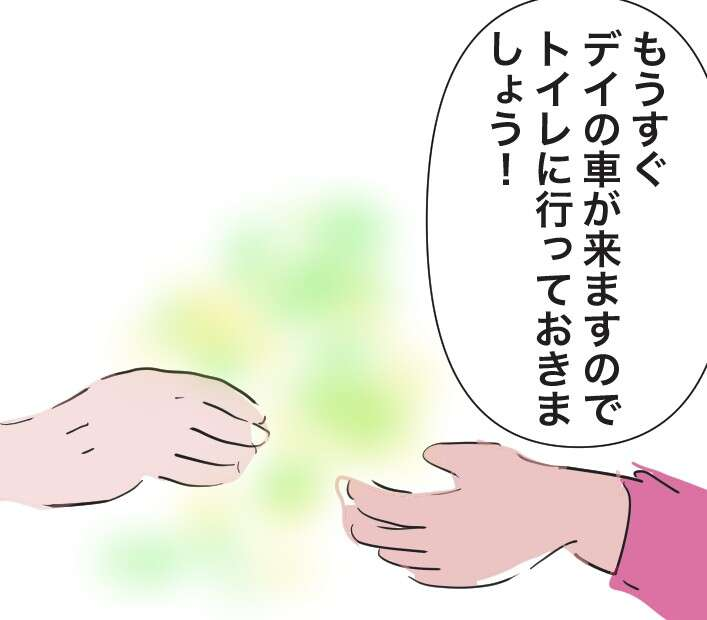
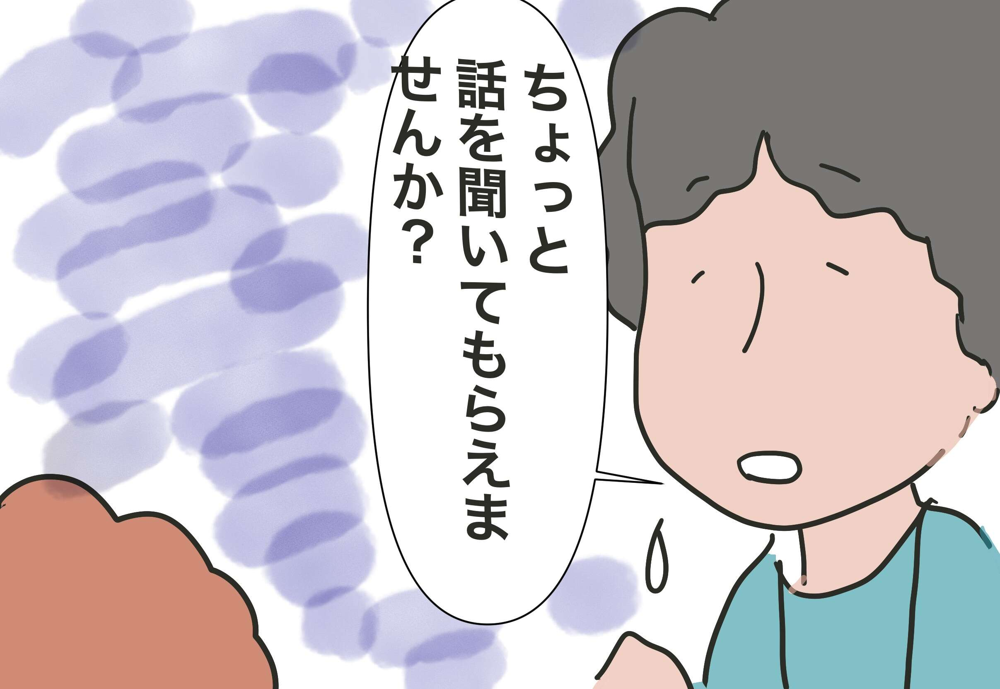
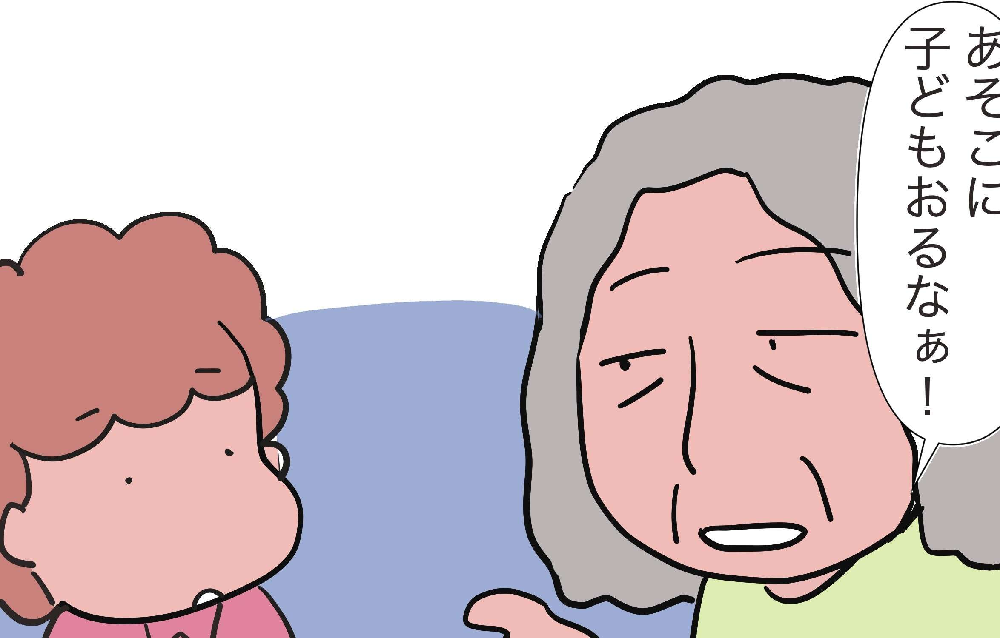
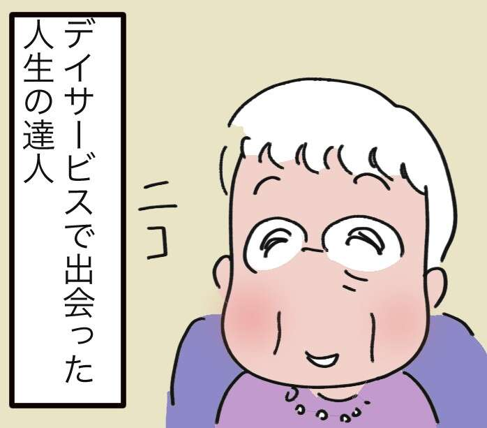
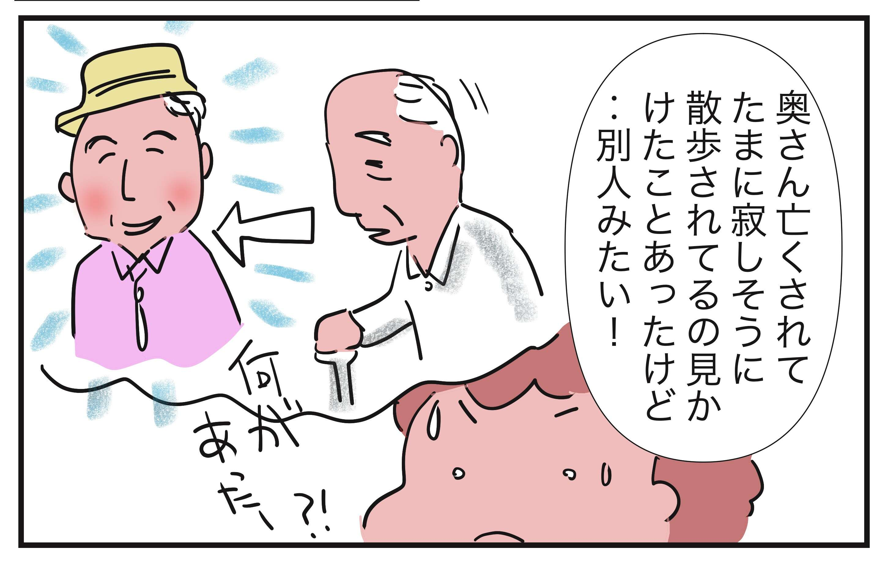
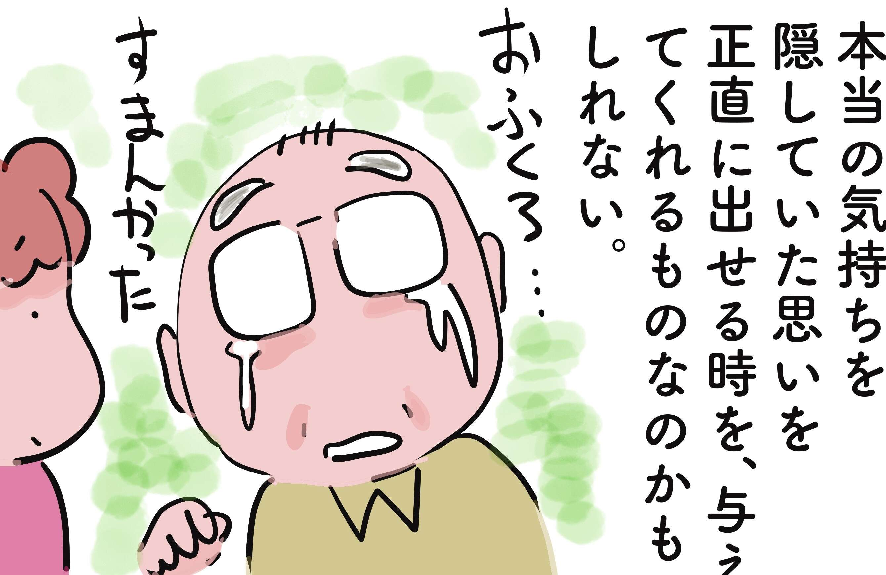
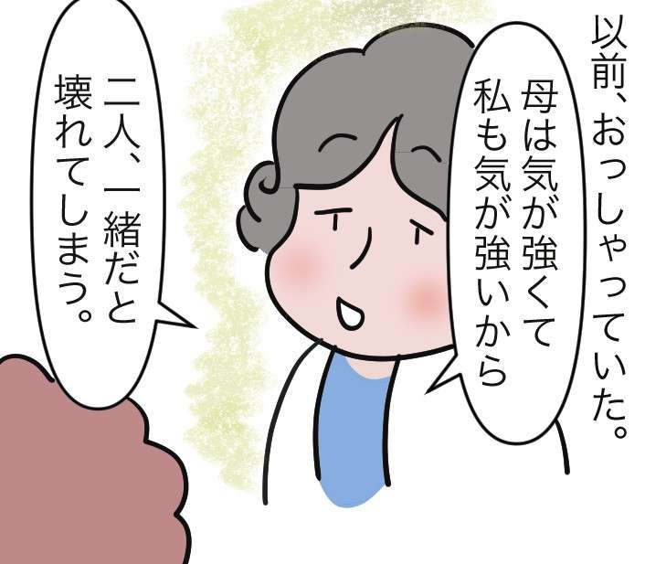
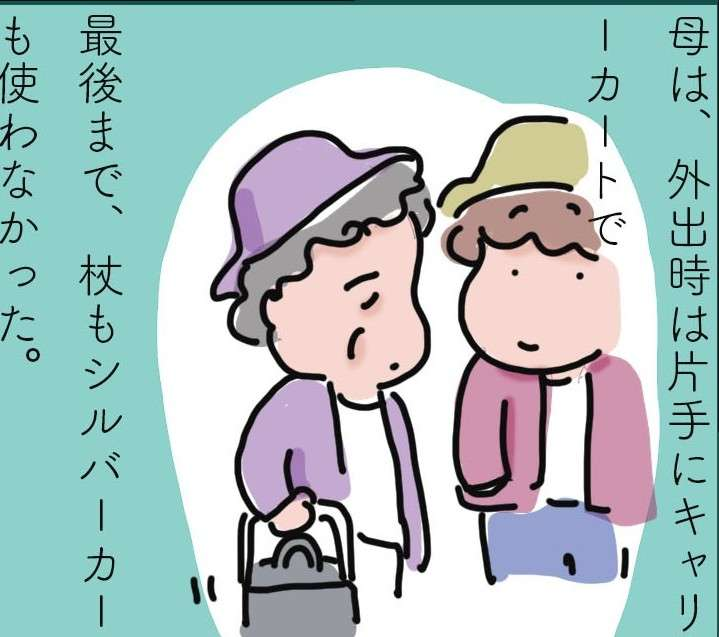

含有关键字“Yurariyuura”的文章
1-

每个人的经历 发布日期：一名患有痴呆症的女性，独自生活。帮助上下班女儿照顾的“邻居”的温暖……
-

每个人的经历 发布日期：如果有更多的人手来支持护理...减轻家庭负担/Yurari Yuura
-

每个人的经历 发布日期：“你能听听我的故事吗？”远程护理女儿的“请求”/宇……
-

每个人的经历 发布日期：患有严重幻视的痴呆症用户。通过互动感受到“家庭的力量”/Yurariyu...
-

每个人的经历 发布日期：95岁的老人过着热闹的生活！我在日间服务中遇到的一位生活专家的“感谢之言”......
-

每个人的经历 发布日期：“你在哪儿走？”我每天都等待十年前去世的丈夫回家……
-
每个人的经历 发布日期：
还没看到我就变年轻了！？失去妻子的邻居又恢复了活力……
-

每个人的经历 发布日期：痴呆症有很多问题，但是......父亲隐藏的真实感情/Yurari Yuu......
-

每个人的经历 发布日期：“如果两个人在一起就会崩溃”，提供长期、温柔的照顾 / Yurari Yuura
-

每个人的经历 发布日期：尽可能保持尊严。护理中重要的是什么/Yura...